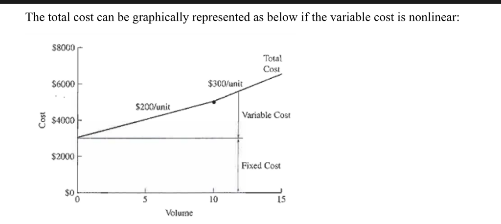
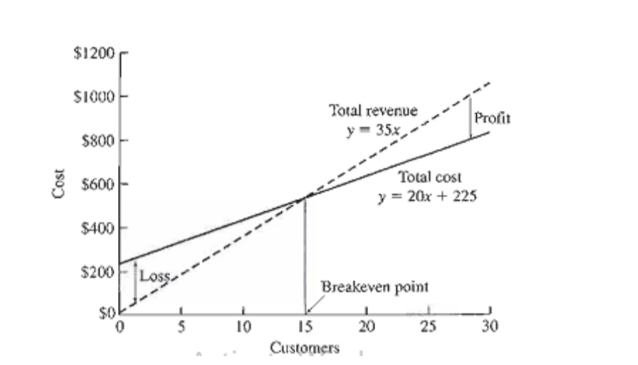
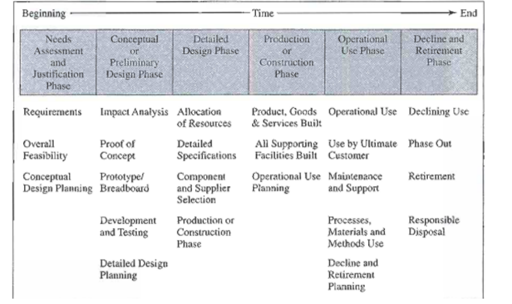

Scope of Module 1
- Distinguish between simple and complex problems
- Discuss the role and purpose of engineering economic analysis
- Describe and give examples of the nine steps in the economic decision making process
- Select appropriate economic criteria for use with different type of economic problems
- Solve simple problems associated with engineering decision-making.
Questions to consider
- How did the cost and weight of fireproofing material affect the engineers' decision making when the twin towers were being constructed?
- How much should a builder be expected to spend on improved fireproofing, given the unlikelihood of an attack on the scale of 9/11?
- How have the perception of risk changed since the 9/11 attacks, how might this affect future building design decision?
Role of engineering economic analysis
Engineering economic analysis is most suitable if the problem is:
- Enough important to give it a serious thought and effort
- Cannot be solved in head and a careful analysis requires that the problem should be organized along with various consequences.
- Having an economic aspect so decision – making is important.
Economic Decision Making
Decision-making is the broad topic because it deals with aspect of everyday human existence. The main focus is to develop the tools to properly analyze and solve the economic problems that are commonly faced by engineers. Even complex situations can be broken down into components to form a sensible solution. The understanding of decision – making process is important because the tools of decision – making is useful for obtaining realistic comparisons between alternatives so that I can make better decision.
Engineering economic analysis focuses on cost, revenues and benefits that occur at different times. Most of the things that engineers design calls for spending money in the design and building stages and after completion revenues or benefits occur – usually for years. Thus the economic analysis of cost, benefits and revenues occurring over time is called engineering economics.
Element in decision – making
- To have a decision – making situation there must be at-least two alternatives available. If only one course of action is available, there can be no decision – making because there is nothing to decide.
- The decision should be rational. (Out of five horses running on a race track if someone chooses its betting horse by closing eyes and pointing finger on a number then it is not rational)
Rational decision – making
Rational decision making contains nine essential elements. Although the sequence can vary and can be repeated, but all the elements are present in all rational decision. The elements are:
Problems on Decision-making
A concrete aggregate mix is required to contain 31% sand by volume for proper batching. One source of material, which has 25% sand and 75% coarse aggregate and sells for Rs. 270/m³. Another source which has 40% sand and 60% course aggregates, sells for Rs. 396/m³. Determine the least cost per cubic meter of blended aggregates.
A machine part is manufactured at a unit cost of Rs. 40 for material and Rs 15 for direct labor. An investment of Rs. 500,000 in tooling is required. The order requires 3 million pieces. Halfway through the order, a new method of manufacture can be put into effect that will reduce the unit cost to Rs. 34 for material and Rs. 10 for direct labor – but it will require Rs. 100,000 for additional tooling. This tooling will not be useful for fortune orders. Once costs are allocated at 2.5 times the direct labor cost. What if anything, should be done?
In the design of a cold-storage warehouse, the specification call for a minimum heat transfer through the warehouse walls of 30,000 joules/m³, when there us a 30 ºC temperature between the inside and the outside surface of the insulation. The two insulation materials considered as follows:
| Insulation Material | Cost per cubic meter | Conductivity (J-m/m² – C - hr) |
|---|---|---|
| Rock wool | $12.50 | 140 |
| Foamed insulation | $14.00 | 110 |
The basic equation for heat conduction through a wall is

Part 2: Engineering Costs and Cost Estimating
This part defines fundamental cost concepts. The costs includes fixed and variable costs, marginal and average costs, sunk and opportunity costs, recurring and non-recurring costs, incremental cash cost, book costs and life-cycle costs. It part covers the various types of estimates and difficulties sometimes encountered. The models include unit factor, segmenting, cost indexes, power sizing, triangulation and learning curves. This part discusses estimating benefits and developing cash flow diagrams.
Engineering Costs
The total cost can be graphically represented as below if the variable cost is nonlinear:

An entrepreneur named Sheetal was considering the money making potential of chartering a bus to take people from his home-town to an event in a larger city. Sheetal planned to provide transportation tickets to the event, and refreshments on the bus for his customers. She gathered data and categorized the predicted expenses as either fixed or variable.
| Item | Fixed Cost (in Rs) | Item | Variable cost(in Rs) |
|---|---|---|---|
| Bus rental | 7200 | Event ticket | 1125/person |
| Gas expense | 6750 | Refreshment | 675/person |
| Other fuels | 1800 | ||
| Bus driver | 4500 |
Develop an expression of Sheetal’s total fixed and total variable cost for chartering this trip.
Sheetal developed an overall total cost equation for his business expenses. Now, she wants to evaluate the potential to make money from this chartered bus trip if she sets the price of each ticket at Rs. 2500
From this the above exercise we can derive the total cost and total revenue equations and these will be used to calculate the profit – loss breakeven chart.
This can be graphically represented as:

Cost Estimating (Continued)
A distributor of electric pump must decide what to do with a “lot” of old lecetric pumps purchased three years ago. Soon after the distributor purchased the lot, technology advances made the old pumps less desirable to customers. The pumps are becoming more obsolescent as they sit in inventory. The pricing manager has the following information:
| Distributor purchase price 3 years ago | Rs. 6,30,000 |
| Distributor storage cost to date | Rs. 90,000 |
| Distributor’s list price 3 years ago | Rs. 8,55,000 |
| Current list price of the same number of new pumps | Rs. 1,080,000 |
| Amount offered for the old pumps from a buyer 2 years ago | Rs. 4,50,000 |
| Current price the lot of old pumps would bring | Rs. 2,70,000 |
Looking at this, the pricing manager has concluded that the price should be set at Rs. 7,20,000. This is the money that the firm has “tied-up” in the lot of old pumps (6,30,000+90,000), and it was reasoned that the company should at least recover this cost. Furthermore, the pricing manager has argued that an Rs. 720000 price would be Rs. 1,35,000 less than the list price from 3 years ago, and it would be Rs.3,60,000 less than what a lot of new pumps would cost (Rs. 1,080,000 – Rs. 7,20,000). What would be your advice on price?
Nonrecurring costs occurs at irregular intervals and hence, it is difficult to plan for or anticipate. It includes emergency maintenance expenses, installing new machines, disposal or close-down cost.
In engineering economic analysis recurring costs are modeled as cash flows that occur at regular intervals (such as every year or every 5 year). Their magnitude can be estimated, and they can be estimated in the overall analysis. Nonrecurring cost can be handled easily if anticipation of timing and size can be predicted.
Philips is choosing between model A (a budget model) and model B (with more features and a higher purchase price). What incremental costs would Philip incur if he chose model B instead of less expensive model A?
| Cost Items | Model A (in $) | Model B (in $) |
|---|---|---|
| Purchase price | 10,000 | 17,500 |
| Installation cost | 3500 | 5000 |
| Annual maintenance cost | 2500 | 750 |
| Annual utility expenses | 1200 | 2000 |
| Disposal cost after useful life | 700 | 500 |
The typical life cycle of the product can be tabulated as:

Life cycle costing refers to the concept of designing products, goods and services with a full and explicit recognition of the associated costs over the various phrases of their life cycles. Two key concept in life-cycle costing are that ‘the later design changes are made, the higher the cost’, and that decisions made early in the life cycle tend to “lock in” cost that are incurred later. The downstream product (products created using raw materials from earlier production stages) changes are more costly and upstream changes (focus on raw material, design, foundational development) are easier (and less costly) to make.
When planner try to save money at an early design stage, the result is often a poor design, calling for change orders during construction and prototype development. These changes, in turn, are more costly than working out a better design would have been. The life cycle effects that engineers should consider at the design time include product costs for liability, production, material, testing and quality assurance and maintenance and warranty. Other life-cycle effects include product features based on customer input and product disposal effects on the environment. The engineers should consider all life cycle cost..